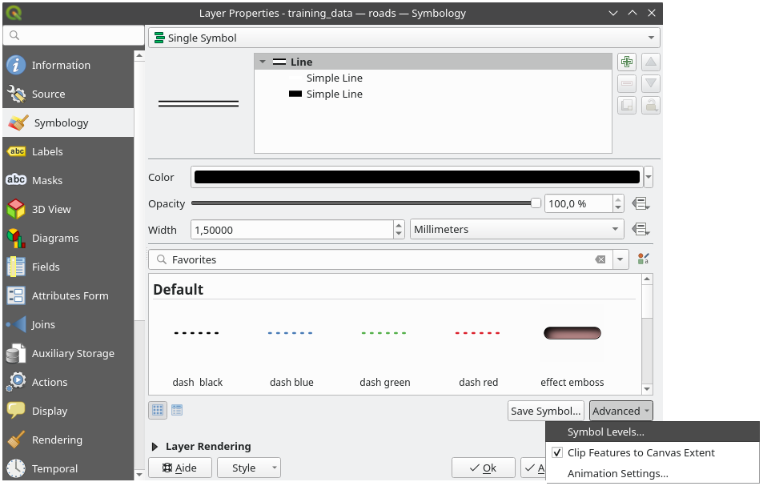
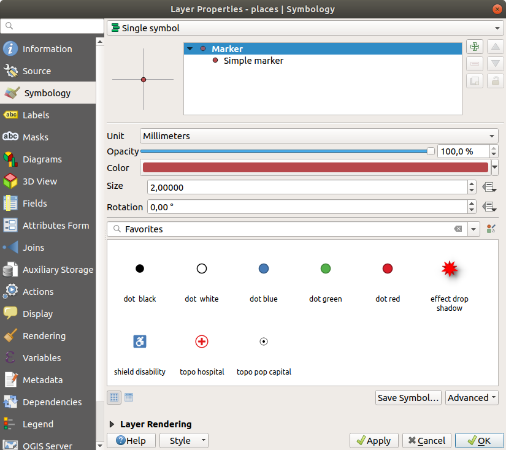
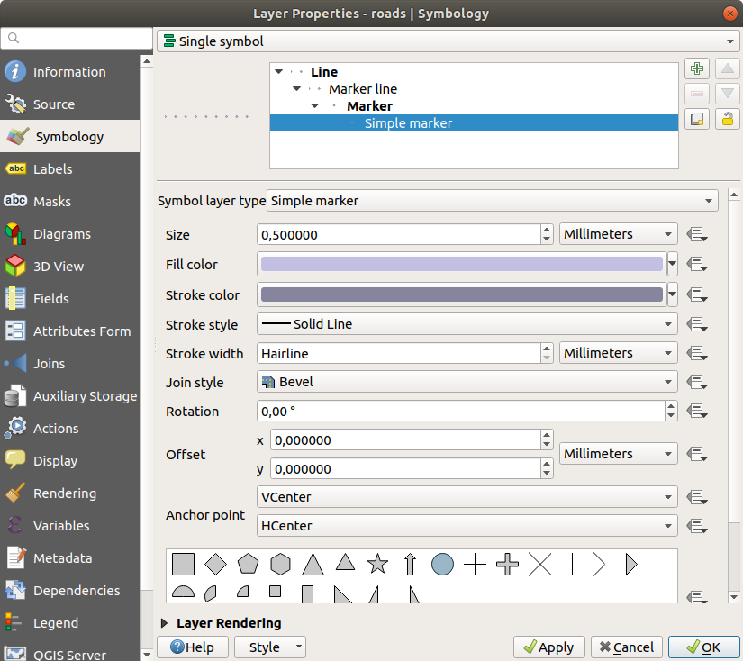
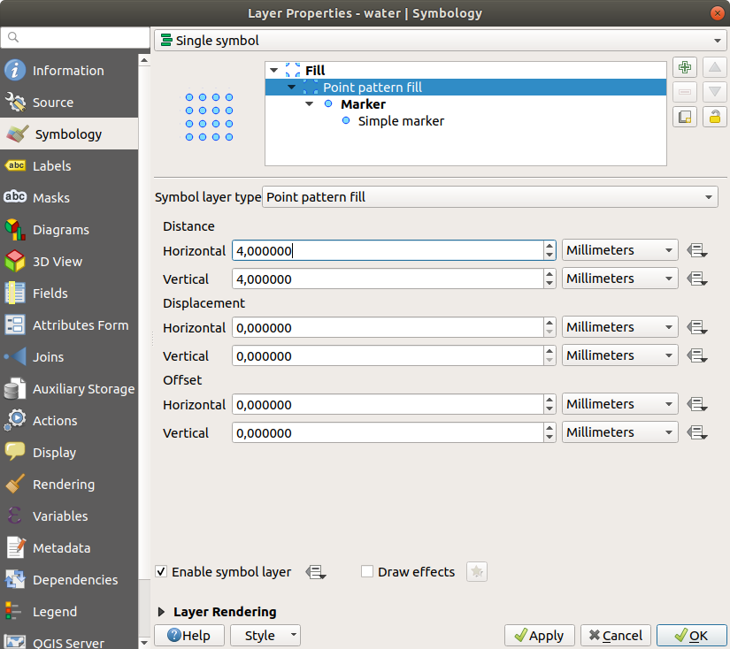
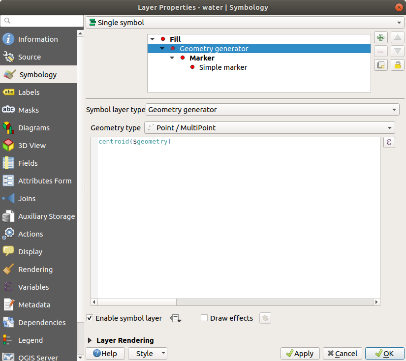
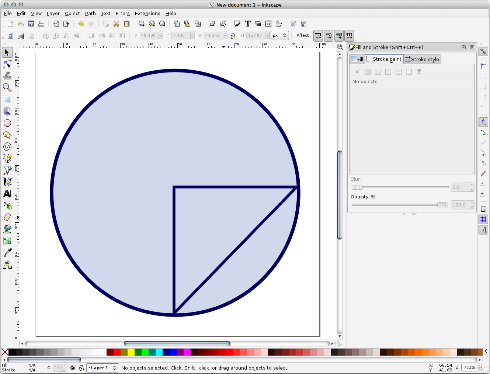

重要
翻訳は あなたが参加できる コミュニティの取り組みです。このページは現在 100.00% 翻訳されています。
2.4. レッスン: シンボロジ
レイヤのシンボロジとは、地図上におけるその外観です。空間的な側面を持つデータを表現する他の方法に勝るGISの基本的な強みは、GISを使用すると、作業データの動的な視覚表現ができることです。
したがって、（個々のレイヤのシンボロジに依存する）地図の外観は非常に重要です。作成した地図のエンドユーザーに地図が何を表現するかが簡単にわかるようにする必要があります。同様に重要なこととして、データはそれで作業しながら探索できる必要があり、優れたシンボロジは大きな助けになります。
つまり、適切なシンボロジを持つことは、高級でもなくまたは単に素晴らしいことではありません。実際には、適切にGISを使用して、地図や、人々が使用できる情報を生成するためにそれが不可欠です。
このレッスンの目標: ベクタレイヤに対して、望むとおりのシンボロジを作成できるようになる
2.4.1. ★☆☆ （初級レベル） 理解しよう: 色を変更する
レイヤのシンボロジを変更するには、そのレイヤの レイヤのプロパティ を表示します。 landuse レイヤの色を変更することから始めましょう。
レイヤリストから
landuseレイヤを右クリックします。表示されたメニューの中から プロパティ... メニュー項目を選択します。
注釈
デフォルトでは、レイヤリストでリスト上でダブルクリックすることで、レイヤのプロパティにアクセスできます。
Tip
レイヤ パネルの上部にある
 ボタンをクリックすると、 レイヤスタイリング パネルが表示されます。このパネルを使って、レイヤのいくつかのプロパティを変更することができます。デフォルトでは、変更はすぐに適用されます！
ボタンをクリックすると、 レイヤスタイリング パネルが表示されます。このパネルを使って、レイヤのいくつかのプロパティを変更することができます。デフォルトでは、変更はすぐに適用されます！レイヤプロパティ ウィンドウで、
シンボロジ タブを選択します。
色 ラベルの横にあるカラー選択ボタンをクリックします。標準的なカラーダイアログが表示されます。
グレーを選択して、 OK をクリックします。
レイヤプロパティ ウィンドウで再度 OK をクリックし、色の変更がレイヤーに適用されたことを確認するでしょう。
2.4.2. ★☆☆ （初級レベル） 自分でやってみよう:
water レイヤの色を水色に変更してください。レイヤプロパティ メニューではなく、 レイヤスタイル パネルを使ってみてください。
Solution
色が期待通りに変化していることを確認します。
凡例で
waterレイヤを選択し、 レイヤスタイルパネルを開く ボタンをクリックするだけです。色を水のレイヤに合ったものに変更します。

一度に1つのレイヤのみで作業を行い、他のレイヤに気を取られたくない場合、レイヤリストでその名前の横にあるチェックボックスをクリックすることで、レイヤを非表示にすることができます。ボックスが空白の場合、そのレイヤは非表示になっています。
2.4.3. ★☆☆ （初級レベル） 理解しよう: シンボル構造を変更する
これはこれまでのところ良いものですが、レイヤのシンボロジには色だけでなく、もっと重要なことがあります。次に、異なる土地利用区域の間の線を削除して、地図の視覚的な乱雑さを減らしたいと思います。
landuseレイヤの レイヤプロパティ ウィンドウを開きます。 シンボロジ タブの下に、以前と同じようなダイアログが表示されます。しかし今回は、単に色を素早く変更するだけではありません。シンボルレイヤツリーで、 塗りつぶし ドロップダウンを展開し、 シンプル塗りつぶし オプションを選択します。
ストロークスタイル のドロップダウンをクリックします。その時点では、短い線と 実線 という文字が表示されているはずです。
これを 線なし に変更します。
OK をクリックします。
これで landuse レイヤは区域の間に線がなくなります。
2.4.4. ★☆☆ （初級レベル） 自分でやってみよう:
再び ``water` レイヤのシンボロジを変更して暗い青の輪郭を持つようにます。
riversレイヤのシンボロジを水路を明確に表現するものに変更します。
:sup:` レイヤスタイルパネル` を開く`ボタンを使うと、すべての変更を即座に確認することができます。そのパネルでは、レイヤのシンボル化中に個々の変更を元に戻すこともできます。
答え
これで地図は次のようになります：

初級者レベルの方は、ここでストップしていただいて結構です。
上記の方法で、残りのすべてのレイヤの色とスタイルを変更します。
オブジェクトの色は自然な色を使ってみてください。例えば、道路は赤や青でなく、グレーや黒でもいいのです。
また、ポリゴンの 塗りつぶしスタイル や ストロークスタイル の設定も自由に変えてみてください。

2.4.5. ★★☆ （中級レベル） 理解する: 縮尺に基づく表示
時には、レイヤが与えられた縮尺に適していないとわかることもあります。例えば、すべての大陸のデータセットは、詳細さが低く、街区レベルではあまり正確ではないかもしれません。それが起こると、不適切な縮尺でデータセットを非表示できるようにしたくなります。
私たちの場合、小縮尺ではビューから建物を見えないようにすることにするかもしれません。このマップは、例えば...

…あまり便利ではありません。その縮尺で建物を区別するのは難しいです。
縮尺に基づくレンダリングを有効にするには：
buildingsレイヤの レイヤプロパティ ダイアログを開きます。 レンダリング タブをアクティブにします。
レンダリング タブをアクティブにします。縮尺に応じた表示設定 というラベルのチェックボックスをクリックして、縮尺に基づいたレンダリングを有効にします。
最小 値を``1:10000``に変更します。

OK をクリックします。
``buildings` レイヤがいつ現れたり消えるかに注目しながら、地図で拡大・縮小する効果をテストします。
注釈
インクリメントにズームインするために、マウスホイールを使用できます。あるいは、ウインドウにズームするために、ズーム・ツールを使用してください：


2.4.6. ★★☆ （中級レベル） 理解しよう: シンボルレイヤを追加する
これでレイヤに対する単純なシンボロジを変更する方法はわかりましたので、次のステップは、より複雑なシンボロジを作成することです。QGISでは、シンボルレイヤを使用して、これを行うことができます。
（シンボルレイヤツリーの シンプル塗りつぶし をクリックして）
landuseレイヤのシンボルプロパティパネルに戻ります。この例では、現在のシンボルは何のアウトラインを持っていません（すなわち、それは 線なし 境界スタイルを使用しています）。
ツリーで 塗りつぶし レベルを選択し、
 シンボルレイヤを追加 ボタンをクリックします。ダイアログは次のようなものに変わり、新しいシンボルレイヤが追加されます。
シンボルレイヤを追加 ボタンをクリックします。ダイアログは次のようなものに変わり、新しいシンボルレイヤが追加されます。
例えば色が多少違って見えるかもしれませんが、それはいずれ変えることになります。
今、第2のシンボルレイヤがあります。ソリッドカラーなので、もちろん前の種類のシンボルは完全に隠れます。さらに、これは 実線 の境界スタイルを持っていますが、これは私たちには必要ありません。明らかに、このシンボルを変更する必要があります。
注釈
地図レイヤとシンボルレイヤを混同しないことが重要です。地図レイヤは地図にロードされているベクタ（またはラスタ）です。シンボルレイヤは、地図レイヤを表すために使用されるシンボルの一部です。このコースでは、たいていは地図レイヤを単にレイヤと言いますが、シンボルレイヤは、混乱を防ぐために、シンボルレイヤと呼びます。
選択した新しい シンボル塗りつぶし シンボルレイヤで:
以前のように、境界スタイルを ペンなし へ設定します。
塗りつぶしスタイルを ソリッド か ブラシなし 以外に変更します。例えば：

OK をクリックします。
これで、結果を確認し、必要に応じて微調整することができます。複数の追加のシンボルレイヤを加えて、そのようにレイヤのテクスチャのようなものを作成することもできます。
これは楽しい！しかし、おそらく、実際の地図に使用するためにあまりにも色が多すぎるでしょう...
2.4.7. ★★☆ （中級レベル） 自分でやってみよう:
必要に応じて拡大することを思い出し、上記の方法を使用してシンプルだが邪魔にならないテクスチャを buildings レイヤに作りなさい。
答え
buildings レイヤは好きなようにカスタマイズできますが、地図上で異なるレイヤを簡単に見分けられるようにする必要があることを忘れないでください。
こちらが例です：
2.4.8. ★★☆ （中級レベル） 理解しよう: シンボルレベルを並び替える
シンボルレイヤがレンダリングされるとき、それらは、異なる地図レイヤがレンダリングされる方法と同様の順序でレンダリングされます。これは、場合によっては、一つのシンボルに多くのシンボルレイヤを有することは予期しない結果を引き起こす可能性があることを意味します。
（上で説明したシンボルレイヤを追加する方法を使って）
roadsレイヤに余分なシンボルレイヤを与えます。ベースラインは ストローク幅 を
1.5にし、色は黒にします。新しい、一番上のレイヤの幅を
0.8にし、色は白にします。
このようになることにお気づきでしょう。

さて、道路は 道路 らしいシンボロジになっていますが、各交差点で線が互いに重なっているのがわかります。これは私たちが望むところではありません！
こうならないように、シンボルレベルを並べ替えることにより、異なるシンボルレイヤがレンダリングされる順序を制御することができます。
シンボルレイヤの順番を変更するには：
シンボルレイヤツリーで一番上の ライン レイヤを選択します。
ウィンドウの右下にある をクリックします。
 すると、このようなダイアログが表示されます：

 描画順序を有効にする にチェックを入れます。そして、対応するレベル番号を入力することで、各シンボルのレイヤ順序を設定することができます。0は最下層です。
描画順序を有効にする にチェックを入れます。そして、対応するレベル番号を入力することで、各シンボルのレイヤ順序を設定することができます。0は最下層です。今回の場合は、このようにオプションを有効にするだけです：

これにより、太い黒線の境界の上に白線が描画されます。
OK を２回クリックし、地図に戻ります。
地図はこのように見えるでしょう:

終了したら、将来シンボルを再び変更するときに作業が失われないように、シンボル自体を保存することを忘れないでください。現在のシンボルスタイルは、 レイヤプロパティ ダイアログの下部にある スタイルの保存... ボタンをクリックすることで保存することができます。ここでは、 QGISのQMLスタイルファイル フォーマットを使用します。
スタイルは、 solution/styles/better_roads.qml フォルダに保存します。以前に保存したスタイルは、 スタイルの読み込み... ボタンをクリックすることで、いつでも読み込むことができます。スタイルを変更する前に、置き換えようとしている未保存のスタイルが失われることに留意してください。
2.4.9. ★★☆ （中級レベル） 自分でやってみよう:
再び roads レイヤの外観を変更してください。
道路を狭く、黄色にし、薄いグレーの輪郭と真ん中に細い黒の線を入れます。レイヤのレンダリング順序を ダイアログで変更する必要があることを忘れないでください。

答え
要求されたシンボルを作るには三つのシンボルレイヤが必要です。
最下層のシンボルレイヤは広く、単色のグレーな線です。その上に僅かに細い単色の黄色の線と最後に別の細い単色の黒線があります。
上記のようなシンボルレイヤで、思うような結果が得られない場合：
シンボルレベルが以下のようになっていることを確認してください：

これで、地図は次のようになります：

2.4.10. ★★★ （上級レベル） 自分でやってみよう:
シンボルレベルは、分類されたレイヤ（複数のシンボルを持つレイヤ）にも適用されます。分類についてはまだ説明していませんので、分類前の初歩的なデータで作業します。
新しいプロジェクトを作成し、
roadsデータセットだけを追加します。exercise_data/stylesにあるスタイルファイルadvanced_levels_demo.qmlをレイヤに適用します。これは、 レイヤプロパティ ダイアログの下部にある のコンボボックスから行うことができます。Swellendam のエリアにズームします。
シンボルレイヤを使用して、レイヤの輪郭線は、以下の画像に従って互いに流入することを確認してください：
答え
シンボルレベルを次の値に調整します：

異なる結果を得るために、異なる値で実験してください。
次の課題に進む前に、元のマップをもう一度開いてください。
2.4.11. ★★☆ （中級レベル） 理解しよう: シンボルレイヤタイプ
塗りつぶしの色を設定したり、あらかじめ定義されたパターンを使用するだけでなく、完全に異なるシンボルレイヤタイプを使用することができます。今まで使っていたのは シンプル塗りつぶし タイプだけでした。より高度なシンボルレイヤタイプを使えば、シンボルをさらにカスタマイズすることができます。
ベクタの各種類（ポイント、ライン、ポリゴン）は、シンボルレイヤタイプの独自のセットを有しています。まず、ポイントのために利用可能なタイプを見ていきます。
ポイントシンボルレイヤタイプ
places以外のレイヤのチェックを外します。placesレイヤのシンボルプロパティを変更します。 シンボルレイヤツリーで シンプルマーカー レイヤを選択し、 シンボルレイヤタイプ ドロップダウンをクリックすると、さまざまなシンボルレイヤタイプにアクセスできます。

利用できるさまざまなオプションを調べ、適切だと思ったスタイルのシンボルを選択してください。
迷ったら、白の境界と淡いグリーンの塗りつぶし、大きさ
3.00、 ストローク幅0.5の丸い シンプルマーカー を使いましょう。
ラインシンボルレイヤ型
ラインデータのために利用できるさまざまなオプションを表示するには：
roadsレイヤの最上段のシンボルレイヤの シンボルレイヤ型 を マーカー線 に変更します：
シンボルレイヤツリーで シンプルマーカー レイヤを選択します。このダイアログに合わせてシンボルのプロパティを変更します：
 マーカー線 レイヤを選択し、間隔を
1.00に変更します：
スタイルを適用する前に、シンボルレベルが正しいことを（以前に使用した ダイアログ経由で）確認してください。
スタイルを適用したら、地図上でその結果を見てみましょう。おわかりのように、これらのシンボルは道路と一緒に向きを変えるが、常にそれに沿って曲げないでください。これは、いくつかの目的には有用ですが、他の目的には有用ではありません。ご希望の場合は、前にした方法に戻って、問題のシンボルレイヤーを変更できます。
ポリゴンシンボルレイヤタイプ
ポリゴンデータのために利用できるさまざまなオプションを表示するには：
他のレイヤと同様に、
waterレイヤの シンボルレイヤ型 を変更します。リスト上の異なるオプションが何ができるかを調べます。
これらのうち、適した１つを選択します。
迷ったときは、次のオプションを使用して、 ポイントパターン塗りつぶし を使用します。
 通常の シンプル塗りつぶし で新しいシンボルレイヤを追加します。
それを暗青の境界を持つ水色にします。
下に移動 ボタンでポイントパターンシンボルレイヤの下に移動させます。
その結果、テクスチャを構成する個々のドットの大きさ、形状や距離を変えることができるという利点があり、水のレイヤのためのテクスチャシンボルを持っています。
2.4.12. ★★☆ （中級レベル） 自分でやってみよう:
protected_areas レイヤに透き通った緑の塗りつぶし色を適用し、輪郭を以下のように変更します:

答え
以下は、シンボル構造の例です：

2.4.13. ★★★ （上級レベル） 理解しよう: ジオメトリジェネレータシンボロジ
ジオメトリジェネレータシンボロジは、すべてのレイヤタイプ（ポイント、ライン、ポリゴン）で使用することができます。生成されるシンボルは、レイヤタイプに直接依存します。
非常に簡単に説明すると、ジオメトリジェネレータシンボロジでは、シンボロジ自体の中でいくつかの空間演算を実行することができます。例えば、ポイントレイヤを作成せずに、ポリゴンレイヤ上で重心の空間演算を実行することができます。
さらに、結果として得られるシンボルの外観を変更するためのすべてのスタイリングオプションがあります。
試してみましょう！
waterレイヤを選択します。シンプル塗りつぶし をクリックし、 シンボルレイヤタイプ を ジオメトリジェネレータ に変更します。

空間クエリを書き始める前に、出力のジオメトリタイプを選択する必要があります。この例では、各地物に重心を作成するため、ジオメトリタイプを ポイント／マルチポイント に変更します。
クエリパネルにクエリを書いてみましょう：：
centroid($geometry)
 OK をクリックすると、
waterレイヤがポイントレイヤとしてレンダリングされるのがわかります！レイヤシンボロジの中で空間演算を実行したことになるのです、すごいでしょう？
ジオメトリジェネレータシンボロジでは、 通常 のシンボロジとは一線を画した表現が可能です。
★★★ （上級レベル） 自分でやってみよう:
ジオメトリジェネレータは、単なるシンボルレベルの一つです。 ジオメトリジェネレータ の下に、別の シンプル塗りつぶし を追加してみてください。
ジオメトリジェネレータシンボロジのシンプルマーカーの外観も変えてみてください。
最終的にはこのようになるはずです：
答え
別のシンボルレベルを追加するには、
ボタンをクリックします。 ボタンをクリックして、リストの一番下に新しいシンボルを移動します。
ボタンをクリックして、リストの一番下に新しいシンボルを移動します。水のポリゴンを塗りつぶすために良い色を選択します。
ジオメトリジェネレータシンボロジの マーカー をクリックし、好きなように円を別の形状に変更します。
より有用な結果を得るために、他のオプションも試してみてください。
2.4.14. ★★★ （上級レベル） 理解しよう: カスタムSVG塗りつぶしを作る
注釈
この演習を行うには、無料のベクタ編集ソフトウェア Inkscape がインストールされている必要があります。
Inkscape プログラムを起動します。以下のようなインタフェースが表示されます：

コーレルのような、他のベクタ画像編集プログラムを使ったことがある方は、これを親しみ易いと思うはずです。
まず、小さなテクスチャに適したサイズにキャンバスを変更します。
メニューをクリックします。 文書のプロパティ ダイアログが表示されます。
単位 を px に変更します。
幅 と 高さ を
100に変更します。実行後はダイアログを閉じます。
メニューをクリックして、作業しているページを参照してください。
円 ツールを選択します。

楕円を描画するためにクリックして、ページ上でドラッグします。楕円が円に変わるようにするには、描いている間 Ctrl ボタンを押し続けます。
先ほど作成した円を右クリックし、その 塗りとストローク オプションを開きます。このように、そのレンダリングを変更できます：
塗り 色を何とか淡灰青に変更し、
ストロークの塗り タブの中で境界に暗い色を割り当て、
ストロークのスタイル タブの下で境界の太さを減らします。

鉛筆 ツール使ってラインを引きます：
一回クリックするとラインが始まります。 Ctrl キーを押しながらだと、15度単位でスナップします。
水平方向にポインタを移動し、クリックしてポイントを置きます。
クリックして、ラインの頂点にスナップし、垂直線をトレースしてクリックで終わります。
二つの端の頂点を繋げます。
このようなシンボルで終わるように、円のストロークに合わせ、必要に応じて、それを周りに移動するには三角形のシンボルの色と幅を変更します。
 満足のゆくシンボルが得られたら、コースのあるディレクトリの下の
exercise_data/symbolsにlanduse_symbolとして、SVGファイルで保存してください。
QGISでは:
landuseレイヤの レイヤプロパティ を開きます。- シンボロジ タブで、 シンボルレイヤ型 を以下に示す SVG塗りつぶし に変更して、シンボル構造を変更します。
... ボタンをクリックし、 ファイルを選択... をクリックして、SVG画像を選択します。
シンボルツリーに追加され、さまざまな特性（色、角度、効果、単位...）をカスタマイズできるようになりました。

ダイアログを有効にすると、 landuse レイヤの地物がシンボルで覆われ、次のマップのようなテクスチャが表示されるはずです。テクスチャが見えない場合は、マップキャンバスを拡大するか、レイヤのプロパティで テクスチャ幅 を大きく設定する必要があるかもしれません。

2.4.15. 結論
異なるレイヤのためにシンボルを変更することで、ベクタファイルの集まりを読みやすい地図に変えてきました。何が起こっているか見ることができるだけでなく、それを見るのはうれしくもあります！
2.4.16. より詳しく知りたい場合は
2.4.17. 次は?
レイヤ全体のためのシンボルを変更することは便利ですが、それぞれのレイヤの中に含まれている情報は、まだこれらの地図を読んでいる誰かには利用できません。街路が何と呼ばれていますか？ある領域がどの行政地域に属していますか？農場の相対的な表面積は何ですか？この情報のすべてがまだ隠されています。次のレッスンでは、地図上にデータを表現する方法を説明します。
注釈
最近の忘れずに地図を保存しましたか？